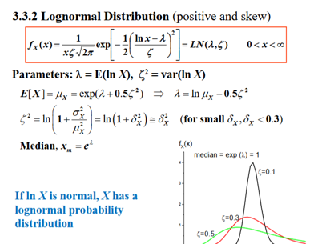
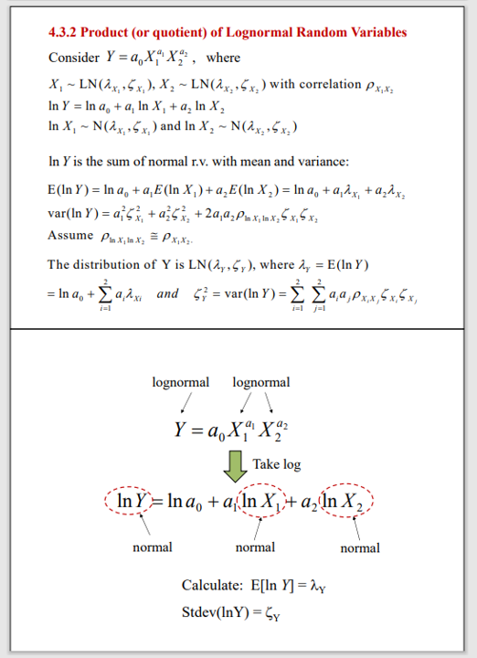
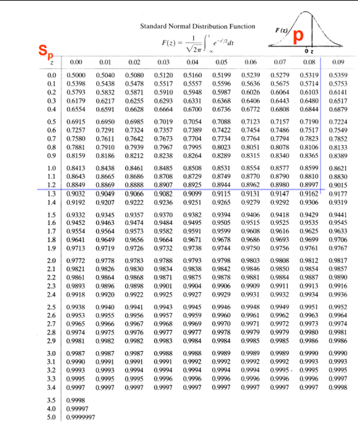

CE2407A
Tutorial 4
Quiz review &
Q9 Tutorial Set 2
Week 12
Assistant Professor Lei Jiarui, Gary
Civil and Environmental Engineering
National University of Singapore
Quiz review
Lectures 1–5
1. Introduction
2–3. Probability
4. Random variables
5. Distribution (1)
Normal and lognormal distributions
are both included.
Coverage boundary
The announcement excludes
Lectures 6–7, blended learning
and MATLAB.
Lecture 4’s given exponential PDF example remains within the covered notes.
After the review
Set 2 Q9
Later lecture topic
Uncertainty & histograms
Lecture 1
Epistemic: imperfect model
Aleatory: inherent variability
Statistical: limited information
Relative frequency: \(r_i = \dfrac{n_i}{N}\)
Density height: \(h_i = \dfrac{r_i}{w_i}\)
\(\sum_i r_i = 1 \qquad \sum_i h_i w_i = 1\)
Density \(\times\) bin width gives relative frequency.
Quick check
A concrete-strength bin contains
12 of 25 specimens.
Its width is \(2.5\,\mathrm{MPa}\).
Find its relative frequency
and density height.
Show answer
\(\begin{aligned}r &= \dfrac{12}{25} = \mathbf{0.48} \\ h &= \dfrac{0.48}{2.5} \\ &= \mathbf{0.192}\,\mathrm{MPa}^{-1}\end{aligned}\)
Events & independence
Lectures 2–3
\(P(A \cup B) = P(A) + P(B) - P(A \cap B)\)
\((A \cup B)^c = A^c \cap B^c\)
Independent events
\(P(A \cap B) = P(A)P(B)\)
Mutually exclusive events
\(A \cap B = \varnothing\)
Positive-probability, mutually exclusive
events cannot be independent.
Quick check · Set 1 Q7
Two independent detectors have detection probabilities
\(0.8\) and \(0.9\).
What is the probability that
at least one detects?
Show answer
\(\begin{aligned}&1 - P(\text{neither detects}) \\ &= 1 - (0.2)(0.1) \\ &= \mathbf{0.98}\end{aligned}\)
Lecture 2, §§2.1–2.3 and Lecture 3, independence · Tutorial Set 1 Q7(a)
Conditional probability & Bayes
Lecture 3
\(P(A \mid B) = \dfrac{P(A \cap B)}{P(B)}\)
\(P(A) = \sum_i P(A \mid E_i)P(E_i)\)
\(P(E_i \mid A) = \dfrac{P(A \mid E_i)P(E_i)}{P(A)}\)
The \(E_i\) form a mutually exclusive,
exhaustive partition.
The conditioning event determines
the denominator.
Quick check · Set 1 Q6
Earthquake rates \(L : M : H = 1 : 0.1 : 0.01\).
Liquefaction \(F\) has conditional
probabilities \(0.05\), \(0.20\) and \(0.90\).
Given liquefaction, find \(P(L \mid F)\).
Show answer
\(\begin{aligned}&\dfrac{0.05\times1}{0.05 + 0.020 + 0.009} \\ &= \mathbf{0.633}\end{aligned}\)
Normalize rates by \(1.11\).
This factor cancels in the ratio.
Lecture 3, §§2.4–2.7 · Tutorial Set 1 Q6(b), (d)
Random variables
Lecture 4
PMF: \(p(x) = P(X = x), \quad \sum_x p(x) = 1\)
PDF: \(f(x) \ge 0, \quad \int f(x)\,\mathrm{d}x = 1\)
CDF: \(F(x) = P(X \le x)\)
\(P(a < X \le b) = F(b) - F(a)\)
\(\mu = \sum_x xp(x) \quad\text{or}\quad \int xf(x)\,\mathrm{d}x\)
\(\sigma^2 = \operatorname{E}[X^2] - \mu^2, \quad \mathrm{COV} = \dfrac{\sigma}{\mu}\)
Sums and integrals run over the full support.
PDF height can exceed 1. Discrete endpoints matter.
Quick check · Set 2 Q1
\(X\) = number of bids won.
| \(x\) | \(0\) | \(1\) | \(2\) | \(3\) |
|---|---|---|---|---|
| \(p(x)\) | \(.08\) | \(.42\) | \(.42\) | \(.08\) |
Find \(P(0 < X \le 2)\), \(\operatorname{E}[X]\)
and \(\operatorname{Var}(X)\).
Show answer
\(\begin{aligned}P &= .42 + .42 = \mathbf{.84} \\ \operatorname{E}[X] &= \mathbf{1.50} \\ \operatorname{Var}(X) &= 2.82 - 1.50^2 \\ &= \mathbf{.57}\end{aligned}\)
Lecture 4, PDF pp. 2–5 and 7–8 · Tutorial Set 2 Q1–2
Normal distribution
Lecture 5
\(X \sim \mathrm{N}(\mu,\sigma), \quad Z = \dfrac{X-\mu}{\sigma}\)
In these notes, the second parameter is the SD.
\(\Phi(z) = P(Z \le z)\)
\(P(X > c) = 1 - \Phi\!\left(\dfrac{c-\mu}{\sigma}\right)\)
\(\Phi(-z) = 1 - \Phi(z)\)
Quick check · Set 2 Q3
Peak-hour traffic:
\(T \sim \mathrm{N}(200,60)\) planes/hour.
Capacity = \(350\) planes/hour.
Find \(P(T > 350)\).
Show answer
\(\begin{aligned}z &= \dfrac{350-200}{60} = 2.50 \\ P &= 1 - \Phi(2.50) \\ &= 1 - .9938 = \mathbf{.0062}\end{aligned}\)
Lecture 5, PDF pp. 1–5 · Tutorial Set 2 Q3
Lognormal distribution
Lecture 5
\(X \sim \mathrm{LN}(\lambda,\zeta), \quad \ln X \sim \mathrm{N}(\lambda,\zeta)\)
\(X > 0\). Parameters \(\lambda\) and \(\zeta\) describe \(\ln X\).
\(\delta = \dfrac{\sigma}{\mu}, \quad \zeta = \sqrt{\ln(1 + \delta^2)}\)
Given the mean: \(\lambda = \ln\mu - \dfrac{\zeta^2}{2}\)
Given the median: \(\lambda = \ln(\mathrm{median})\)
\(P(X > c) = 1 - \Phi\!\left(\dfrac{\ln c-\lambda}{\zeta}\right)\)
Quick check · Set 2 Q4
Runoff \(R\) is lognormal.
Median = \(7\) cfs, \(\mathrm{COV} = .15\).
Sewer capacity = \(8\) cfs.
Find the per-storm flood
probability \(P(R > 8)\).
Show answer
\(\begin{aligned}\lambda &= \ln 7, \quad \zeta \approx .14917 \\ z &= \dfrac{\ln 8-\ln 7}{\zeta} \approx .89518 \\ P &\approx \mathbf{.1853}\end{aligned}\)
With \(z\) rounded to \(.90\), a normal
table gives \(.1841\).
Lecture 5, PDF pp. 7–8 · Tutorial Set 2 Q4
Tutorial Set 2 · Question 9
![Tutorial Set 2, Question 9. A concrete column is subjected to an axial load W that is a log-normal random variable with mean = 3000 kN and C.O.V = 0.2. The mean crushing strength (i.e. resistance) of the concrete, R is 35,000 kN per square metre with C.O.V = 0.2. Assume uniform compressive stress over the cross-sectional area of the column, so that the applied stress is S = W/A, where A = cross-sectional area of the column is a constant. (a) What is the distribution of the applied stress? (b) Determine the probability of crushing of a 0.4 m by 0.4 m column. Assume a convenient probability distribution for R. (c) If a failure (crushing) probability of 10^-3 is permitted, determine the required cross-sectional area of the column.](assets/questions/set2-q9.png)
Question 9 · Lognormal distribution

Question 9 · Products & quotients

Question 9 · Lecture notes

T2 Q9 · Column sizing
More
Resets this exercise and its chat.